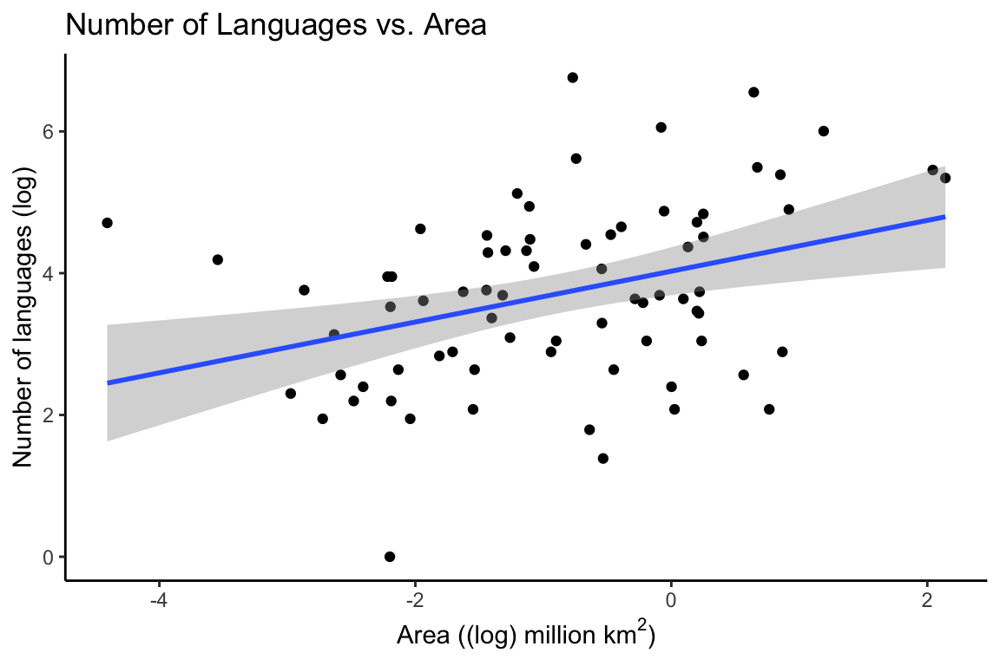
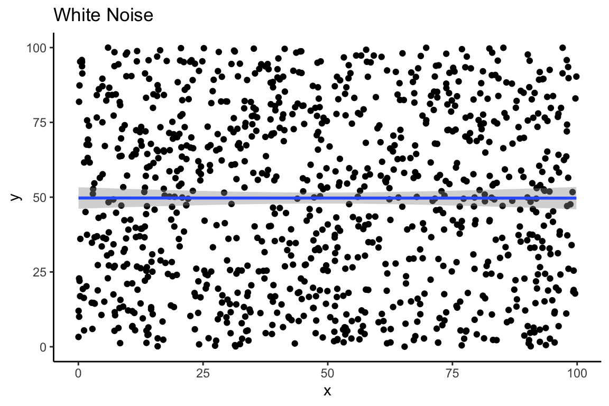
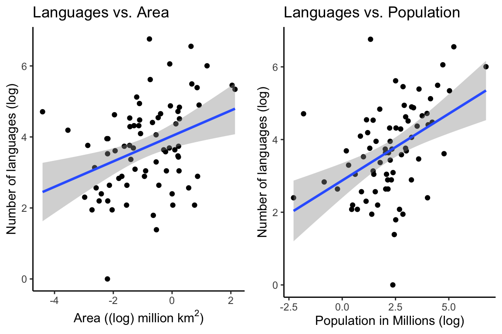

Analyzing Linear Relationships
Ethan Weed
Linear Relationships
One of the most basic things a researcher is interested in is seeing whether there is any relationship between variables. Here, we will look at data from Nettle (1998).

Nettle recorded the number of languages, the area (in km2), the population, the mean growing season (MGS, in months), the number of weather stations measuring MGS, and the standard deviation of the measurements of MGS from the different weather stations in each country.
Plotting Correlations
We can use ggplot to see if there is any clear relationship between these variables. We might expect that there would be a relationship between the area of a country and the population of that country. We can use the geom_smooth and the geom_point functions to take a quick look.
rm(list = ls())
library(tidyverse)
df <- read.csv("/Users/ethan/Documents/GitHub/ethanweed.github.io/r-tutorials/data/nettle_1998.csv", sep = ";")
# Nettle reports the population data in 1000's, probably to save room in the data table, but that is an unusual number to think about population in, so let's convert to millions. While we're at it, let's convert km2 to millions, so that the number doesn't appear in scientific notation on the x-axis
df$Population <- df$Population*1000/1000000
df$Area <- df$Area/1000000
# For purposes of plotting, let's convert to a log scale
df$Population_log <- log(df$Population)
df$Area_log <- log(df$Area)
df$Languages_log <- log(df$Languages)
p1 <- ggplot(df, aes(Area_log, Languages_log)) +
geom_point() +
geom_smooth(method = "lm") +
theme_classic() +
labs(y = "Number of languages (log)",
x = (bquote('Area ((log) million km'^2*')')),
title = "Number of Languages vs. Area")
p1
Modelling a Relationship as a Correlation
# load pander library to make a pretty output table
library(pander)
# if you don't want to bother with the pander library, you can just write "print(c)" or even just "(c)". Pander just makes the table output look nicer.
# do a correlation test to see how much the number of languages correlates with the area of the country
# and store the result in "c"
c <- cor.test(df$Languages, df$Area)
# alter the contents of c$data.name so that it doesn't say e.g. "df$Languages" in the output table
c$data.name <- "Languages and Area"
# output the results in a table
pander(c)| Test statistic | df | P value | Alternative hypothesis | cor |
|---|---|---|---|---|
| 2.576 | 72 | 0.01204 * | two.sided | 0.2905 |
The output tells us that there is a positive correlation between the number of languages and the area of the country. We can see this in the correlation coefficient (cor) which is 0.29. The correlation coefficient is a number between 1 and -1, with 1 indicating a perfect positive correlation, and -1 indicating a perfect negative correlation. The p-value of the correlation indicates how confident we can be in the fit of the model.
Correlation Matrix
Sometimes it can be useful to look at all the correlations between all of the variables in a dataset at once. This can be done with a correlation matrix. However, we should be careful about reading too much into a correlation matrix: it just tells us how much the variables correlate with each other. In order to be more rigorous about making predictions, we will need to build linear models.
df1 <- data.frame("Languages" = df$Languages, "Area" = df$Area, "Population" = df$Population, "MGS" = df$MGS)
df1$Languages <- as.numeric(df1$Languages)
pander(cor(df1))| Languages | Area | Population | MGS | |
|---|---|---|---|---|
| Languages | 1 | 0.2905 | 0.4088 | 0.2418 |
| Area | 0.2905 | 1 | 0.3331 | -0.1277 |
| Population | 0.4088 | 0.3331 | 1 | -0.01717 |
| MGS | 0.2418 | -0.1277 | -0.01717 | 1 |
Modelling a Relationship as a Linear Regression
In the plot above, we used a so-called linear model to draw the line between the points. The straight line in the plot is a linear model, that minimizes the distance between the line and every individual point. If we generate some random numbers to create white noise, then the line should be close to horizontal. Here we see a linear model of 1000 random numbers between 0 and 100 plotted against 1000 other random numbers between 0 and 100:
set.seed(42)
x = runif(1000, min=0, max=100)
y = runif(1000, min=0, max=100)
df_random <- data.frame("x" = x, "y" = y)
ggplot(data = df_random, aes(x,y)) +
geom_point() +
geom_smooth(method = "lm") +
theme_classic() +
labs(title = "White Noise")
If we were in doubt, our correlation matrix shows us that there is very little correlation between these two vectors of random numbers:
pander((cor(df_random)))| x | y | |
|---|---|---|
| x | 1 | -0.0004327 |
| y | -0.0004327 | 1 |
If we want to go beyond simply observing the correlation and instead use our linear model to make predictions about new data that we have not yet seen, we need to get the equation for our model’s line. That will allow us to extend the line in either direction, and make predictions.
The equation of a line is \(y=mx+y_0\), where \(y_0\) is the point at which the line intercepts the y-axis. This is sometimes also written as \(y=mx+b\), or \(y=ax+b\). These equations are all equivalant. The important thing for our purposes is that they define the slope and intercept of a line which represents a linear model of the data.
Linear models are very useful, and they are all over the place in statistics. In the case of our random, white-noise data, because the slope is nearly equal to zero, the intercept of the model is a very close approximation of the mean of y:
print(mean(y))## [1] 49.70157pander(summary(lm(data = df_random, y ~ x)))| Estimate | Std. Error | t value | Pr(>|t|) | |
|---|---|---|---|---|
| (Intercept) | 49.72 | 1.829 | 27.19 | 2.86e-122 |
| x | -0.0004397 | 0.03217 | -0.01367 | 0.9891 |
| Observations | Residual Std. Error | \(R^2\) | Adjusted \(R^2\) |
|---|---|---|---|
| 1000 | 29.63 | 1.872e-07 | -0.001002 |
mod <- lm(data = df, Languages ~ Area)
# if you don't want to use pander you can just write: summary(mod)
pander(summary(mod))| Estimate | Std. Error | t value | Pr(>|t|) | |
|---|---|---|---|---|
| (Intercept) | 63.37 | 19.12 | 3.315 | 0.001437 |
| Area | 29.93 | 11.62 | 2.576 | 0.01204 |
| Observations | Residual Std. Error | \(R^2\) | Adjusted \(R^2\) |
|---|---|---|---|
| 74 | 138.9 | 0.08439 | 0.07167 |
Modelling Multiple Predictor Variables in a Linear Regression
mod <- lm(data = df, Languages ~ Area + Population)
pander(summary(mod))| Estimate | Std. Error | t value | Pr(>|t|) | |
|---|---|---|---|---|
| (Intercept) | 57.29 | 18.17 | 3.153 | 0.002366 |
| Area | 17.89 | 11.64 | 1.536 | 0.1289 |
| Population | 0.495 | 0.1594 | 3.105 | 0.002731 |
| Observations | Residual Std. Error | \(R^2\) | Adjusted \(R^2\) |
|---|---|---|---|
| 74 | 131.2 | 0.1939 | 0.1712 |
# or you can just write: summary(mod)library(ggpubr)
p1 <- ggplot(df, aes(Area_log, Languages_log)) +
geom_point() +
geom_smooth(method = "lm") +
theme_classic() +
labs(y = "Number of languages (log)",
x = (bquote('Area ((log) million km'^2*')')),
title = "Languages vs. Area")
p2 <- ggplot(df, aes(Population_log, Languages_log)) +
geom_point() +
geom_smooth(method = "lm") +
theme_classic() +
labs(y = "Number of languages (log)",
x = "Population in Millions (log)",
title = "Languages vs. Population")
ggarrange(p1, p2, ncol = 2)